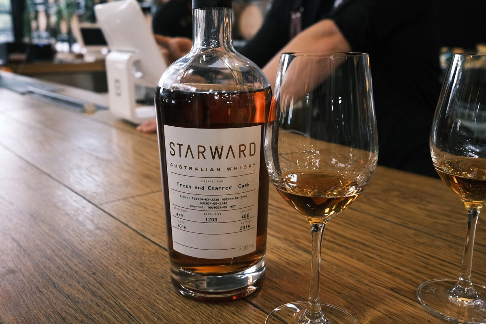

Starward "Fresh and Charred Cask" 48%
Heading Starward. Collaboration with Myer or David Jones or something if I recall correctly. Create your own label sort of thing. A vatting of a bunch of fresh casks and charred casks.
Colour Deep amber.
Nose Jelly snakes and fresh wood. Very sweet, berry jams, artificial fruit, clearly red wine. Figs and apricot delight. Some banana. With water, more vanilla, whipped cream.
Palate Fruit explosion. Heavy on the berries, jelly, sweet red wine. Port almost (err – sorry – Tawny). Quite spicy, oak and cinnamon, oak tannins. With water, texture goes. Not recommended.
Finish Very hot, though not unpleasant. Fruit roll ups and more jellies. Malt at the end, with fruit jams. Shortbread and pancakes. Vanilla and caramel, bourbonish. Long. With water, tannins.
Comments Quite straightforward Aussie wine-forward stuff. Spicy. Don’t add water. 79/100.

Posted by Dominic on 14 Jun 2021